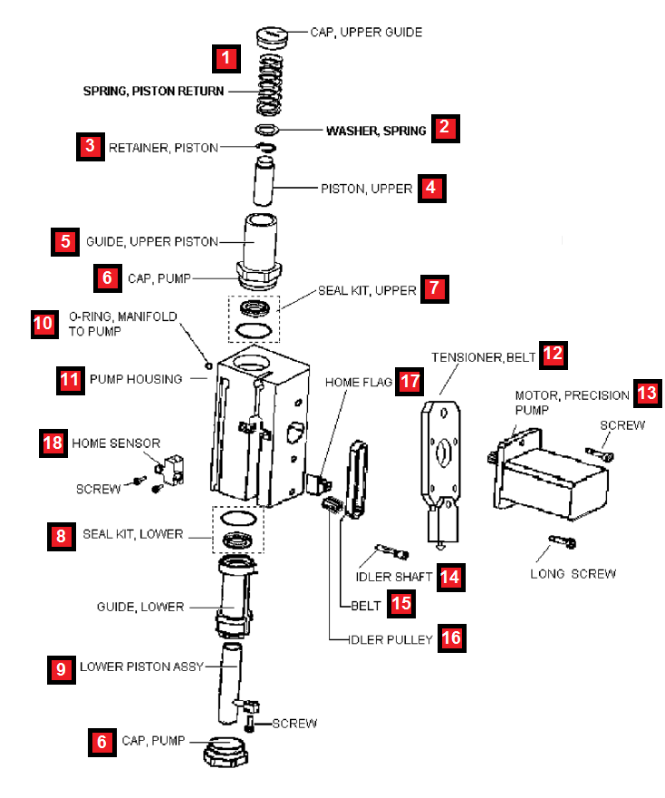
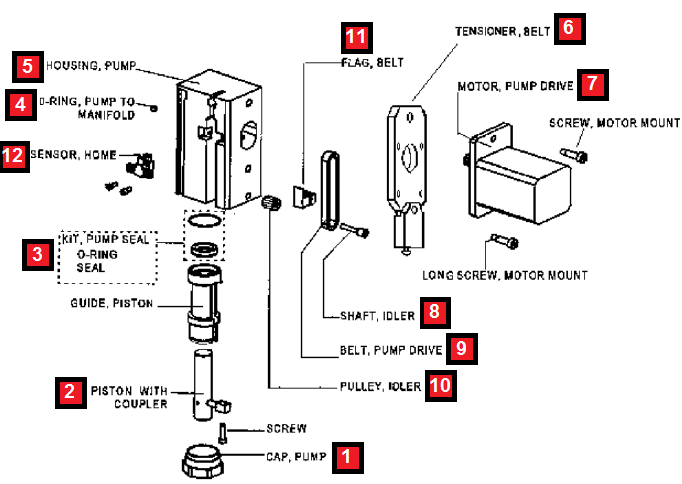

Precision and Wash Pumps
Illustrated Parts List
This document contains parts for the Access 2 Fluidics Precision and Wash Pump assemblies.

| Item | Description | Order Number | Notes |
|---|---|---|---|
| 1 | SPRING, PISTON RETURN, PREC PUMP | A51332 | Kit contains Precision Pump Spring and Upper Guide Cap. |
| 2 | WASHER, SPECIAL | 75312 | Washer, Metal, Silver, Precision Pump Spring |
| 3 | FST, RETAINING RING, EXT | 74872 | Retainer, C-Clip, Precision Pump Piston |
| 4 | PISTON, TOP, PRECISION PUMP | 74793 |
Piston, Pump, Precision, Upper Contains only the piston (no C-Clip Retainer or Silver Metal Washer). |
| 5 | GUIDE, TOP PISTON, PREC PUMP | 74783 | Guide, Pump, Upper Piston, Precision |
| Not Labeled | GUIDE, BOTTOM (LOWER) PISTON, PREC PUMP | 02-007481-3 | Guide, Pump, Bottom (Lower) Piston, Precision |
| 6 | CAP, PUMP | 74802 |
Nut, Black, Plastic, Pump (Precision Upper & Lower, Wash Lower) Not included in CARES Kit. |
| 7 | ASSY, SEAL/O-RING, PREC, UPPER, FS | 81071 |
Seal & O-Ring Kit, Pump, Precision, Upper (MSQ = 1) Do not install to lower piston. |
| Not Labeled | SEAL, UPPER | 6353B | Seal, Pump, Precision, Upper (Do Not Install as Bottom Seal) |
| Not Labeled | O-RING, .801 X .070 CS | 81182 |
O-Ring, Seal (Internal Pump, Precision & Wash) |
| 8 | ASSY, SEAL/O-RING, WASH/PREC, FS | 81081 |
Seal & O-Ring, Kit, Wash Pump Lower or Precision Pump Lower (MSQ = 1) Do not install as upper seal/o-ring. |
| Not Labeled | SEAL, LOWER | 6354B |
Seal, Pump, Precision, Lower Do not install as upper seal. |
| 9 | ASSY, PISTON, PREL PUMP, LOWER | 78524 | Piston, Pump, Precision, Lower (With Guide Pin) |
| 10 | FST, SEAL, O-RING | 77602 | O-Ring , Pumps (Precision & Wash) to Manifold (MSQ=4) |
| 11 | HOUSING, PRECISION PUMP | 74762 | Housing, Clear, Pump, Precison |
| 12 | TENSIONER, MOTOR MOUNTING BRACKET | A52044 | Added to pump for belt reliability. |
| 13 | MOTOR GEAR,PUMP RoHS |
100981 |
Motor, Drive, Pump, Precision, RoHS. Replaces 78873. |
| 14 | SHAFT, PULLEY, PUMP | 75272 | Shaft, Pulley, Idler for Precision, Wash, or Substrate Pump |
| 15 | FST, BELT, TIMING, PREC PUMP | 74883 | Belt, Pump, Precision (MSQ=1).
REPLACE with part number A58782 at stock out. |
| 16 | Pulley, Idler, Aluminum | A95535 | Pulley, Idler, Pump (Precision, Wash, & Substrate) |
| 17 | BELT CLIP, PUMP | 75286 | Flag, Belt clip, Home, Pump, Precision or Wash -
For Neoprene Belts Only (Black)
REPLACE with part number A58782 at stock out. |
| Not Labeled | URETHANE PUMP BELT AND BELT CLIP | A58782 | Precision Pump Belt (A36207) and Flag (A23825) kit. Same as for all DxI pumps.
Replaces 74883 and 75286 at stockout. |
| 18 | ASSY, OPT SENSOR, 8-INCH, W-TYPE RoHS | 7879B | Sensor, Home for Wash, Substrate, and Precision Pump, Peristaltic Pump, 8" Long RoHS |
| Not Labeled | Kit, A2 Precision and Wash Pump O-rings | C30933 | Kit with 12 O-rings used in the precision (2) and wash (1) pumps. New O-rings are thinner than previous version and were cut-in to new instruments and PM kits in July 2018. |

| Item | Description | Order Number | Notes |
|---|---|---|---|
| 1 | CAP, PUMP | 74802 | Nut, Black, Plastic, Pump (Precision Upper & Lower, Wash Lower)
Not include in CARE Kit. |
| 2 | ASSY, 4ML PISTON W/COUPLER | 78414 | Piston, Pump, Wash (With Guide Pin) |
| 3 | ASSY, SEAL/O-RING, WASH/PREC, FS | 81081 | Seal & O-Ring, Kit, Wash Pump Lower or Precision Pump Lower (MSQ = 1) |
| Not Labeled | Guide, Piston, Wash pump | 02-007510-3 | Guide, Piston, Wash Pump (not orderable in oracle) |
| Not Labeled | SEAL, LOWER | 6354B |
Seal, Pump, Precision, Lower Do not install as upper seal. |
| Not Labeled | O-RING, .801 X .070 CS | 81182 | O-Ring, Seal (Internal Pump, Precision & Wash) |
| 4 | FST, SEAL, O-RING | 77602 | O-Ring , Pumps (Precision & Wash) to Manifold (MSQ=4) |
| 5 | HOUSING, WASH PUMP | 75113 | Housing, Clear, Pump, Wash |
| 6 | TENSIONER, MOTOR MOUNTING BRACKET | A52044 | Added to pump for belt reliability. |
| 7 | ASSY, GEAR MOTOR Substrate and Wash RoHS | B48013 | Motor, Drive, Pump, Wash or Substrate (With Gear Attached) RoHS. Replaces 74833. |
| 8 | SHAFT, PULLEY, PUMP | 75272 | Shaft, Pulley, Idler for Precision, Wash, or Substrate Pump |
| 9 | FST, BELT, TIMING | 75373 | Belt, Pump, Wash or Substrate (MSQ=1)
REPLACE with part number A36206 at stock out |
| 9 | Urethane Pump Belt, 50 Teeth [Urethane - Grey] | A36206 | Belt, Pump, Wash or Substrate (MSQ=1)
[Urethane Belt requires Part# A23825 - Flag Belt Clip for Precision or Wash Pump Belt] |
| 10 | Pulley, Idler, Aluminum | A95535 | Pulley, Idler, Pump (Precision, Wash, & Substrate) |
| 11 | BELT CLIP, PUMP | 75286 | Flag, Belt clip, Home, Pump, Precision or Wash - For Neoprene Belts Only (Black) |
| 11 | BELT CLIP, FLAG | A23825 | Flag, Belt Clip, Home, Pump, Precision or Wash -
For Urethane Belts Only (Grey)
Not an orderable part. Contact Technical Support for assistance. |
| 12 | ASSY, OPT SENSOR, 8-INCH, W-TYPE RoHS | 7879B | Sensor, Home for Wash, Substrate, and Precision Pump, Peristaltic Pump, 8" Long RoHS |
| Description | Order Number | Notes |
|---|---|---|
| Pump, Precision, Assy, Complete, Boxed & Tested RoHS | B94944 | Replaces A59083. |
| Pump, Wash, Assy, Complete, Boxed & Tested RoHS | B94918 | Replaces 77123. |
Edit Log
- 07/20/2016 THX - New format release.
- 05/25/2018 EMB - Added wash pump piston guide.
- 11/27/2019 THX - Removed obsolete parts.
- 7/13/2021 THX - Added new urethane belts and new pump home flag parts.
- 4/1/2022 THX - Removed non-orderable parts: Precision Pump Belt (A36207) and Flag (A23825) from Precision Pump section.
- 8/16/2023 DJP - Fixed part number for precision pump motor.
- 8/28/2025 DJP - Use "Order Number" heading.